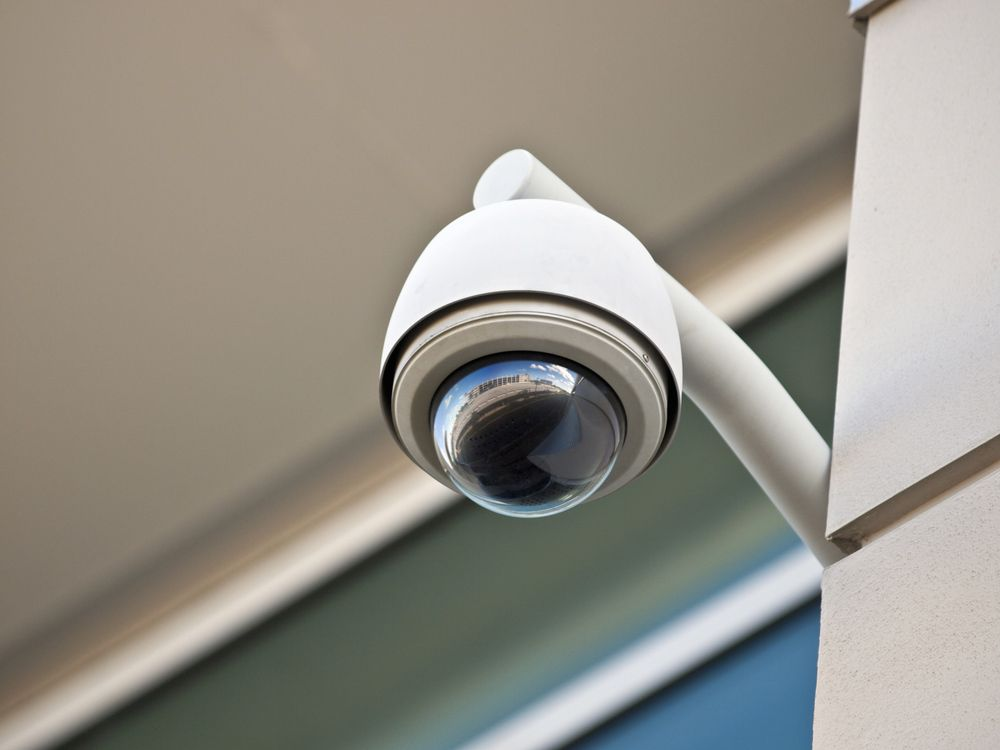
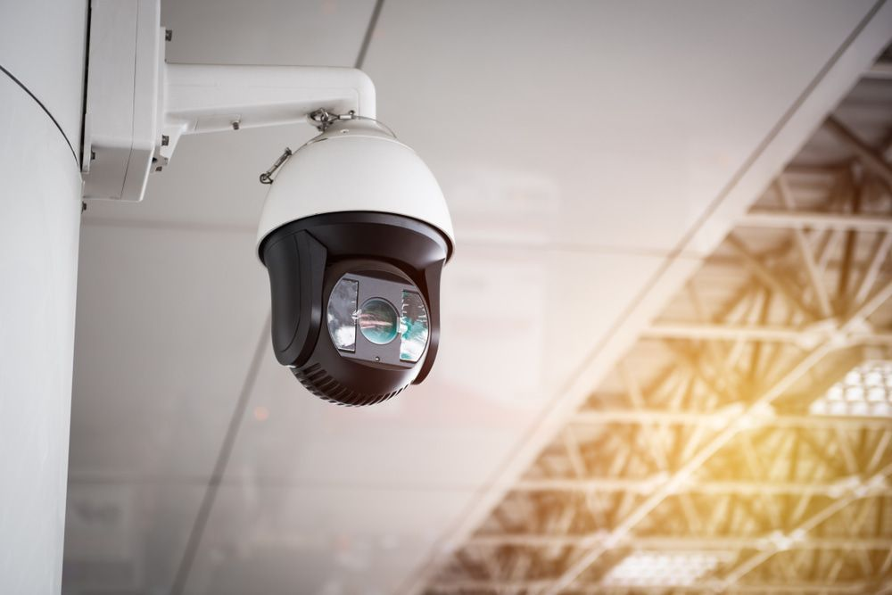

Remotely Monitor Your Property
At SPL Security Solutions, we provide a comprehensive range of security cameras and CCTV systems that seamlessly integrate with electronic security systems for enhanced protection. As a Gallagher and Integriti channel partner, we are exclusively certified to install and support these advanced systems, ensuring all our electronic security technicians are fully licensed. Our Hikvision cameras offer high-definition monitoring for both indoor and outdoor areas. Indoor cameras discreetly oversee high-risk zones like cash registers and entrances, while weather-resistant outdoor models deter intruders and capture incidents. With expert installation and remote access capabilities, we deliver tailored security solutions for complete peace of mind.
We provide flexible wired and wireless options to suit your specific needs—from basic home observation to advanced, multi-camera setups for retail and trade businesses or public spaces. Contact us today to explore the right CCTV system for your Gold Coast, Brisbane or Northern NSW space. We have high-definition digital video surveillance cameras and IP surveillance systems available and can provide connectivity with onsite security alarms or access control systems.
Advanced Security Camera Features
Our cameras come equipped with state-of-the-art features for optimal performance and security. They offer high-resolution imaging, wide-angle lenses for extensive coverage and night vision for clear footage in low light. Additional features include motion detection, remote access via smartphone and cloud storage for secure footage backup.
Whether you need pan, tilt and zoom capabilities or number plate recognition, our cameras and CCTV systems can enhance the safety of your property. Reach out now to learn which features best match your security requirements.

City skyline

Benefits of CCTV Monitoring
With advanced recording technology and continuous monitoring, we provide customers with 24/7 peace of mind, knowing their property is under watch. The key benefits of our CCTV systems include:
- Crime Deterrence: Visible CCTV cameras discourage criminals from targeting your property. For retail spaces, point-of-sale monitoring with transaction capture is available.
- Video Evidence: Recorded CCTV footage provides critical evidence for investigations and legal proceedings, making it invaluable for post-event review.
- 24/7 Remote Monitoring: Our CCTV systems operate around the clock, and with remote access, you can monitor your property from anywhere, anytime.
- Employee Protection: CCTV cameras safeguard employees against workplace incidents or violence and aid in identifying potential hazards early.
- Cost Savings: CCTV systems can reduce insurance premiums, prevent financial losses from theft or vandalism, and allow for multi-site monitoring, saving on labour costs.
Contact SPL Security Solutions today to discuss a tailored CCTV solution for your security needs.
Frequently Asked Questions
-
How can CCTV improve home security?
You can’t put a price on your family’s safety. Installing a CCTV security system is an extremely effective way to protect your home. A security camera system is a powerful deterrent against potential criminal activity. If a crime does take place, you will have video evidence of the act which can prove helpful in a police investigation. CCTV also has other practical uses. For instance, your CCTV system provides live video footage to ensure your elderly relatives, children and pets are safe.
-
Do I need CCTV for my business?
Regardless of the size of your business, CCTV security cameras are a valuable investment. Not only do they serve as a powerful deterrent to criminal activity, but their benefits extend far beyond security. CCTV systems help improve inventory control, enhances staff and customer safety and prevent issues like employee theft or fraud. In the event of an injury or accident, having video footage makes filing a claim much easier and more straightforward. With a CCTV system in place, you’re not only enhancing security but also protecting your bottom line.
-
Should I install a wired or wireless security system?
Wireless security cameras are popular for their easy installation and the convenience of being able to disconnect from your Wi-Fi network. However, they can be challenging to maintain. Many wireless systems rely on batteries for power, which means you'll need to replace or recharge them periodically and they are prone to dropping out in a weak Wi-Fi signal. To ensure consistent performance and greater reliability, we recommend opting for a wired CCTV system, which eliminates these concerns and provides a more stable, long-term solution.
-
How do I pick the right camera type?
We have a wide variety of security camera systems available. Some of the most popular security camera types include:
- Dome
- Pignose
- Bullet
- Panoramic
- Motorised PTZ cameras
Each CCTV camera is best suited to different applications. So, we recommend speaking to our team. We will help you find the ideal camera to suit your needs.
-
Will moving trees trigger a recording?
Moving trees could potentially trigger a recording, especially if the camera's sensitivity is high. To resolve this, adjusting the camera's motion detection settings to ignore small movements, like those caused by trees, can be effective. Alternatively, repositioning the camera away from the trees or using physical barriers to block their movement in the camera's field of view can prevent unnecessary recordings.
-
Can I view the camera footage remotely?
Yes, with most modern systems, you no longer need to be onsite to review the CCTV camera footage. If you have a reliable internet connection, no matter where you are, you can view the day’s footage. Everything your security system records can be accessed via a free and easy to use app. This app is available through your PC, tablet or smartphone.

Service Areas
Brisbane
Northern NSW